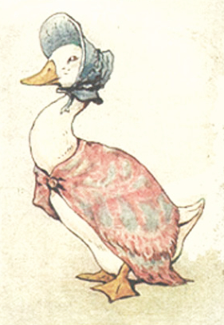
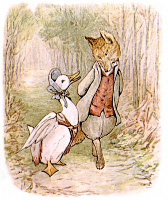
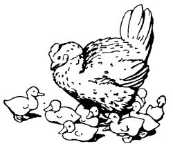
ラルフと ベッツィに おくる まきばの はなし
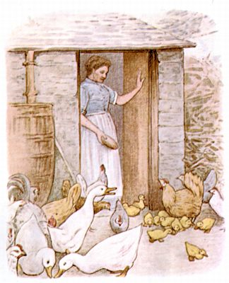
ほんと おかしな えづらですよね。 ほら、 あひるのこが めんどりと いっしょに いるんですよ！
―― いまから はなすのは、 みずかきジェマイマの ものがたり。 このあひるさん、 まきばの おくさんが じぶんに たまごを かえさせてくれないと、 なやんでおりました。
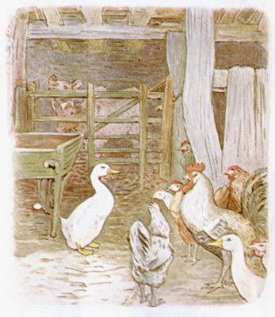
だんなの おねえさんの みずかきリベカは、 たまごを あたためるにしても はじめから だれかに まかせっぱなしで ――「わたし こらえしょうが ないから、 ２８にちも たまごのうえに すわりきりだなんて むり。 そうでしょ、 ジェマイマ。 あんた いつも さましちゃうじゃない、 ほら！」
「ほんとは たまご かえしたいんだけど。 みんな じぶんで かえしたいんだけど。」と みずかきジェマイマは がーがー。
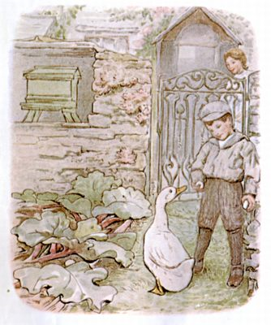
じぶんの たまごを かくしてもみました。 ところが いつも みつかって とりあげられるのです。
もう やけになった みずかきジェマイマは いっそのこと まきばから とおく はなれたところで うむことに しまして。
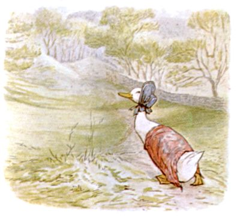
まきばを あとにしたのは、 はれた はるのひの ひるさがり、 おかの むこうまで つづく いなかみちを すすみます。
よそいきの かたかけと おぼうしを みにつけて。
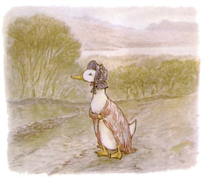
おかの てっぺんに つくと、 とおくに もりが みえてきました。
そこで ふと おもいます、 あそこなら しずかで おちつけそうだ、 と。
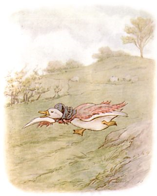
みずかきジェマイマは あまり とびなれては なかったのですが、 かたかけを なびかせながら おかを すこしばかり かけおり、 そらへ むかって とびたちました。
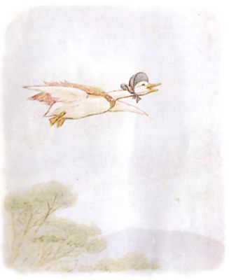
とびだしが うまくいくと、 かぜにも きれいに のれて。
うしろへ ながれていく きぎを しりめに、 やがて もりの まんなかあたり ひらけたところが みえてきます。 そこは きりひらかれて、 きも やぶも ありません。
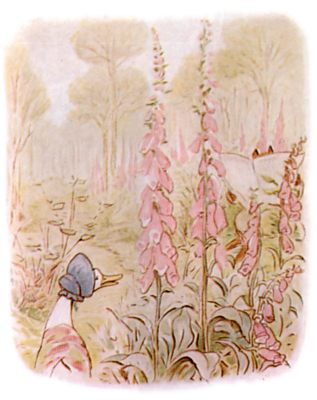
ジェマイマは こころもち もたもたと おりたつと、 そのあとは うむのに ちょうどいい からっとしたところを さがして あたりを よちよち。 せのたかい キツネノテブクロを みつけると このあたりの きりかぶは どうかなと おもいまして。
ところが ―― きりかぶは おさきに とられていまして、 びっくりしたの なんの、 みると みなりのいい とのがたが しんぶんを よんでいたのです。
くろの とんがり おみみに、 すないろの おひげ。
「がー？」と みずかきジェマイマは あたまと おぼうしを かしげます ――「がー？」
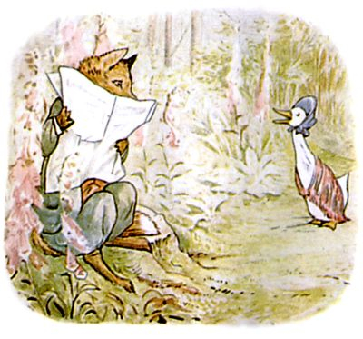
とのがたは しんぶんから めを あげると、 くいいるように ジェマイマを みつめまして ――
「おくさん、 まいごですかな？」と そういう とのがたは おしりのしたに ふさふさの ながい しっぽを しいておりまして。 きりかぶが そこそこ しめっていたのです。
ジェマイマには、 すこぶる ぎょうぎよく ひんのある ひとだと おもえまして。 じぶんは まいごなのでは なく、 たまごを かえすに ちょうどいい からっとしたところを さがしに きているのだと、 わけを はなしました。
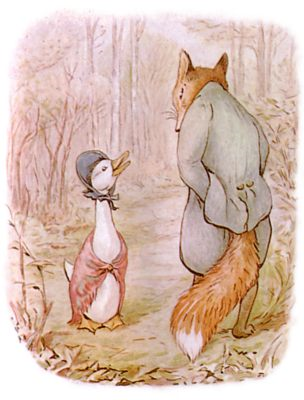
「ああ！ そうでしたか、 なるほど！」と すないろ おひげの とのがたが くいいるように ジェマイマを みつめます。 しんぶんを たたんで、 うしろすそにある ポケットへ しまいました。
ジェマイマが めんどりは じゃまものだと ぐちを いいますと、
「なるほど！ それは それは！ そのにわとりとやらに おあいしたいものです。 ひとつ そやつに みのほどを おもいしらせて やりましょうぞ！」
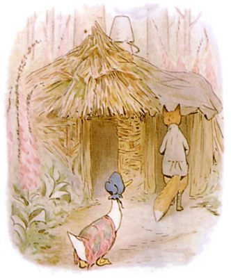
「ときに たまごを かえすところですが ―― わけも ありません。 うちの まきごやには はねが やまと あります。 もちろん おくさま、 じゃまなんて はいりませんよ。 どうぞ おすきなだけ そこに おすわりになって かまわないのです。」と ふわふわ ながい しっぽの とのがたが いいます。
つれてこられたのは、 キツネノテブクロが たくさん はえた おくの おくにある いっけんの わびごやでした。
そだと しばつちで できていて、 こわれた バケツが ふたつ、 えんとつがわりに たてに かさねられています。
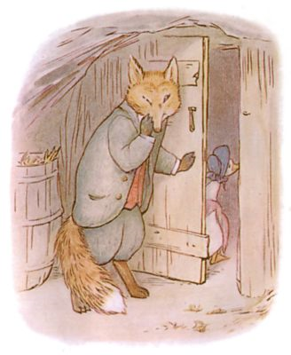
「こちらは なつの べっそうでして、 うちの あなぐら ―― いや、 ふゆの いえでは ―― ぐあいが わるいでしょうから。」と ぬかりない とのがた。
なんと そのこやの うらてに、 もうひとつ ふるい きばこで つくられた あばらやが ありまして。 とのがたは ドアを あけて、 そこへ ジェマイマを とおします。
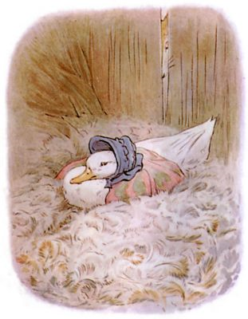
あばらやじゅうに はねの けが ぎっしり つまっておりまして ―― それは もう いきが つまりそうなくらいに。 ところが そのぶん とっても ふかふかで きもちよく。
みずかきジェマイマは こんなに どっさりの はねを まのあたりにして、 ちょっと びっくりしました。 けれども きもちいいので、 まったく てまどることなく、 たまごが うめまして。
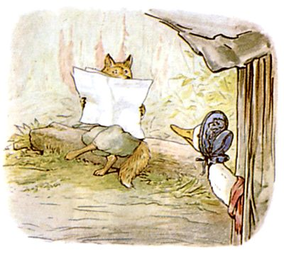
そとに かおを だすと、 すないろひげの とのがたは まるたに こしかけて しんぶんを よんでいると いいますか ―― すくなくとも ひろげては いたのですが、 まなざしは しんぶんごしに ありまして。
きくばりの ひとなので、 ジェマイマが よるは かえることになると いいますと、 きもちを こちらへ よせてくれたようで。 あくるひ おこしになるまで しっかり みはっておくと やくそくしました。
たまごと あひるのこが だいすきだとの ことで、 うちの まきごやで きもちよく たまごを うんでもらえるなんて よろこばしいかぎりだと いってくれまして。
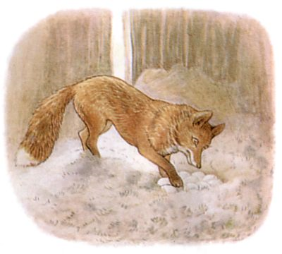
みずかきジェマイマは まいにち ひるすぎに やってきまして。 ぜんぶで ９つ たまごを うみました。 いろは みどりっぽい しろで、 たいへん おおきなものです。 きつねの とのがたは これでもかと みとれまして。 ジェマイマの いないすきに なんども ひっくりかえしては かぞえあげるのです。
やがて ジェマイマは ついに あくるひから あたためだす こころづもりだと つたえまして ――「で、 コムギを ひとふくろ もってくる つもり。 だって たまごが かえるまで そのばを うごいちゃ いけませんし。 ひえちゃうと あれですし。」と まめな ジェマイマ。
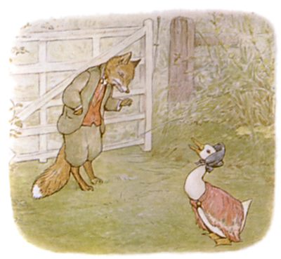
「おくさま、 わざわざ ふくろを おもちいただかなくて けっこうですよ。 オートムギを さしあげます。 それどころか ながながとした おあたためを とりかかるに さきだちまして、 ごちそうを おだしする こころづもりで。 さあ ふたりきりの ディナーパーティを いたしましょう！
それでは まきばの おにわから ハーブを つんできて いただいても よろしいですか？ シソオムレツを つくるのです。 セージや タイム、 ミントに タマネギ２つ、 あと パセリ しょうしょう。 わたくしは つめもの ―― いや オムレツに つかう ラードを てにいれますので。」と すないろひげの とのがたは てぬかり ありません。
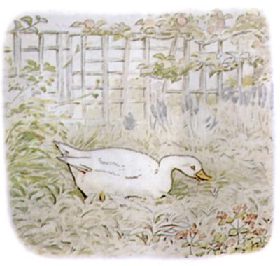
みずかきジェマイマは にぶい ひとでしたから、 セージと タマネギと いわれても まだ おかしいとも おもわなくて。
まきばの おにわを まわりながら、 あひるの まるやきの つめものに つかう、 さまざまな ハーブを ちょっとずつ くわえとっていきました。
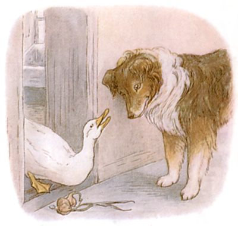
そして よちよち だいどころに はいっていって、 かごから タマネギを ２つ とります。
でようとすると、 ちょうど コリーいぬの ケップに でくわしまして。「そのタマネギ どうするんだい？ いつも ひるすぎると ひとりで どこへ いってるんだい、 みずかきジェマイマ？」
ジェマイマは どちらかというと そのコリーいぬが にがてでしたので、 これまでの いきさつを ぜんぶ はなしてしまいます。
コリーいぬは さえた そのあたまを かたむけながら、 はなしに ききいりました。 このいぬが にやりとしたのは、 ちょうど ぎょうぎのいい すないろひげの とのがたが はなしに でてきたところで。
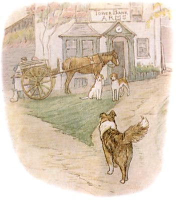
あと いくつか きかれたのが、 もりのことと、 そのこやと あばらやが いったい どこに あるか。
そのあと コリーいぬは そとへ でまして。 むらを かけあしに まわって、 ２ひきいる きつねがりの こいぬを さがしますと、 にくやの とぐちのまえで みつかりました。
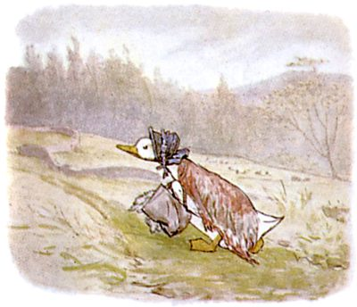
みずかきジェマイマは、 ひざし あふれる ひるさがり、 さいごの いなかみちを すすんでいきます。 ハーブの たばと タマネギ２つの はいった ふくろは ちょっとした おおにもつで。
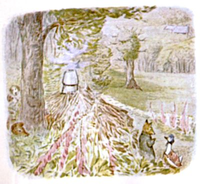
とのがたは まるたに こしかけて、 くんくんしながら もりのあたりを うわのそらで ながめていました。 ジェマイマが おりたつと、 とのがたは さっと たちあがりまして。
「たまごを かくにんしたら すぐに こやのほうへ。 オムレツに つかう ハーブを こちらに。 ほら さっさと！」
とのがたは どうも ぶっきらぼうで。 みずかきジェマイマに してみれば、 こんな しゃべりかた いつもとは ちがって はじめてなわけで。
びっくりするとともに、 こころが ざわざわしてきました。
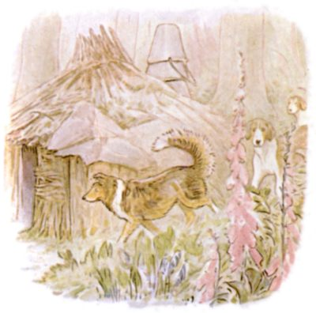
なかに おりますと、 あばらやの うらあたりから どたばた あしおとが きこえてきまして。 くろい おはなの だれかが ドアのしたから くんくん やっていて、 するうち ドアに かぎが かけられまして。
さすがに あわてだす ジェマイマ。
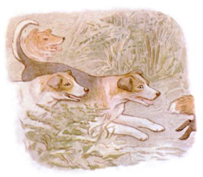
それから まもなく ものすごい ものおとが して ―― わんわん、 わおーん、 ぐるるるる、 おおーん、 きーっ、 うぎゃっ。
これよりあと ひげを はやした きつねの とのがたも、 すがたが みえなくなったわけで。
いそいで ケップは あばらやの ドアを あけて、 みずかきジェマイマを そとへ だしてやります。
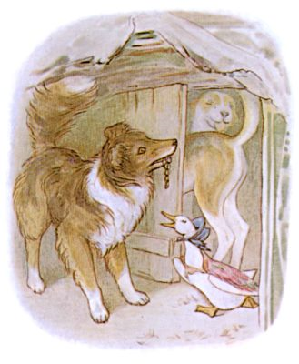
ところが まの わるいことに、 こいぬたちが とめるよりもさきに とびこんで、 たまごを みんな たべつくしてしまって。
コリーいぬは みみを かまれていて、 こいぬたちは どちらも へろへろ。
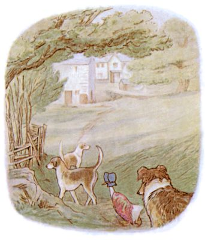
みずかきジェマイマは たまごのために なみだしながら、 うちに つれかえられたのでした。
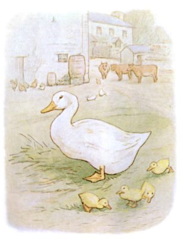
６がつには また いくつか たまごを うみまして、 こんどは じぶんの そばに おいていいことに なったのですが、 そのうち かえったのは ４つだけでして。
みずかきジェマイマによると、 そのとき きが はっていた せいだ、 とのことですが、 じつは そもそも このかた たまごを あたためるの うまくないのですよね。
（おしまい）